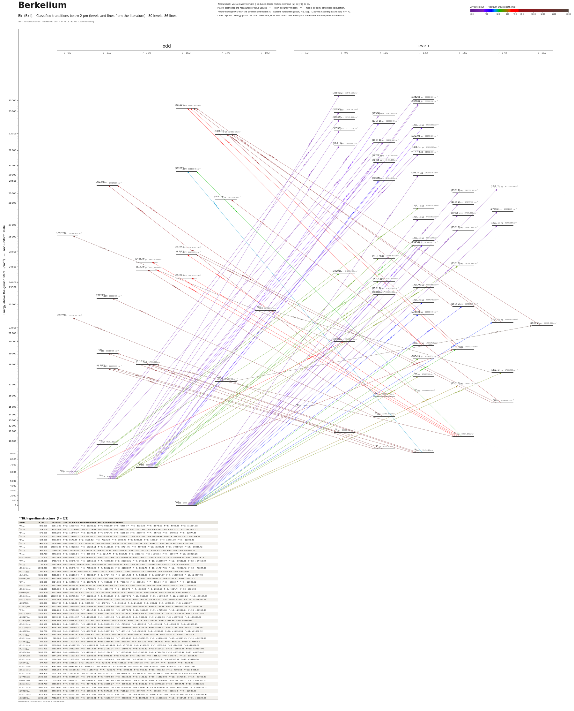

Berkelium energy level diagram
Energy levels and transitions of neutral berkelium (Bk I): 80 levels and 86 classified lines below 2 µm taken from the cited literature, each line with its vacuum wavelength and frequency. The NIST Atomic Spectra Database lists only the ground level and the ionisation limit of berkelium, so the level energies on this page are those of the literature sources named below.
Hover a line or a level to isolate it, click to keep it selected. Scroll to zoom, drag to move.

Download: diagram (PDF) diagram (SVG) transitions (CSV) levels (CSV) source code

249Bk hyperfine structure (I = 7/2)
| Level | A (MHz) | B (MHz) | Shift of each F level from the centre of gravity (MHz) |
|---|---|---|---|
| 6F°11/2 | 590.600 | 1061.300 | F=2: -12997.16 F=3: -11399.02 F=4: -9229.59 F=5: -6455.77 F=6: -3036.22 F=7: +1078.69 F=8: +5946.83 F=9: +11634.38 |
| 8G13/2 | 524.600 | 4586.800 | F=3: -12006.60 F=4: -10714.67 F=5: -8910.74 F=6: -6468.80 F=7: -3237.64 F=8: +959.16 F=9: +6323.22 F=10: +13081.35 |
| 8D11/2 | 575.600 | 3978.200 | F=2: -11449.37 F=3: -10373.55 F=4: -8794.46 F=5: -6588.10 F=6: -3599.49 F=7: +357.38 F=8: +5499.50 F=9: +12074.85 |
| 8G15/2 | 512.600 | 7635.700 | F=4: -12468.27 F=5: -11307.75 F=6: -9572.29 F=7: -7074.91 F=8: -3597.43 F=9: +1109.47 F=10: +7326.28 F=11: +15364.67 |
| 8D9/2 | 638.600 | 8993.800 | F=1: -8170.89 F=2: -8178.52 F=3: -7922.29 F=4: -7080.99 F=5: -5226.36 F=6: -1823.04 F=7: +3771.39 F=8: +12306.40 |
| 8G11/2 | 407.700 | -104.900 | F=2: -9318.57 F=3: -8078.30 F=4: -6428.43 F=5: -4372.22 F=6: -1913.76 F=7: +942.05 F=8: +4189.48 F=9: +7822.00 |
| 8H17/2 | 560.600 | 12630.300 | F=5: -14228.63 F=6: -13253.11 F=7: -11511.35 F=8: -8724.75 F=9: -4574.88 F=10: +1296.46 F=11: +9287.29 F=12: +19835.42 |
| 8H11/2 | 506.600 | 3564.500 | F=2: -10050.74 F=3: -9114.23 F=4: -7735.92 F=5: -5804.72 F=6: -3181.74 F=7: +299.65 F=8: +4833.89 F=9: +10643.17 |
| 8F13/2 | 422.700 | 2443.300 | F=3: -10156.14 F=4: -8894.93 F=5: -7217.74 F=6: -5057.43 F=7: -2333.46 F=8: +1048.14 F=9: +5194.77 F=10: +10227.25 |
| (15/2,0)15/2 | 1710.300 | 6955.200 | F=4: -48347.75 F=5: -41073.73 F=6: -32032.64 F=7: -21054.14 F=8: -7939.51 F=9: +7538.35 F=10: +25634.96 F=11: +46634.18 |
| 8H°17/2 | 2134.500 | 3798.400 | F=5: -69645.48 F=6: -57556.66 F=7: -43271.50 F=8: -26706.21 F=9: -7765.03 F=10: +13659.77 F=11: +37687.88 F=12: +64450.97 |
| 8H13/2 | 98.900 | 6595.400 | F=3: -59.43 F=4: -823.46 F=5: -1506.71 F=6: -1927.99 F=7: -1869.86 F=8: -1078.66 F=9: +735.52 F=10: +3898.82 |
| (15/2,1)17/2 | 2593.200 | 797.400 | F=5: -85945.40 F=6: -70536.96 F=7: -52522.35 F=8: -31883.97 F=9: -8601.70 F=10: +17347.05 F=11: +45987.42 F=12: +77347.05 |
| (6,1/2)°11/2 | 140.900 | 7305.900 | F=2: -183.49 F=3: -956.30 F=4: -1721.05 F=5: -2250.01 F=6: -2258.55 F=7: -1405.08 F=8: +708.89 F=9: +4538.80 |
| (6,1/2)°13/2 | 1025.300 | 4688.800 | F=3: -25110.74 F=4: -21833.94 F=5: -17544.73 F=6: -12114.28 F=7: -5388.03 F=8: +2814.37 F=9: +12699.02 F=10: +24497.78 |
| (18541)13/2 | -215.900 | 4952.600 | F=3: +7572.22 F=4: +5837.83 F=5: +3873.94 F=6: +1816.60 F=7: -170.91 F=8: -1898.11 F=9: -3147.30 F=10: -3673.57 |
| 4G°11/2 | 620.600 | 3924.300 | F=2: -12495.42 F=3: -11275.77 F=4: -9506.88 F=5: -7066.43 F=6: -3801.51 F=7: +471.34 F=8: +5966.17 F=9: +12927.62 |
| (15/2,1)15/2 | -155.900 | 9932.100 | F=4: +8256.15 F=5: +5652.38 F=6: +2973.80 F=7: +463.63 F=8: -1594.36 F=9: -2875.84 F=10: -3015.97 F=11: -1609.35 |
| (15/2,1)13/2 | -311.800 | 4505.900 | F=3: +9917.79 F=4: +7878.34 F=5: +5514.72 F=6: +2950.70 F=7: +334.84 F=8: -2159.56 F=9: -4334.44 F=10: -5966.98 |
| (19439)9/2 | 479.700 | 3522.600 | F=1: -7619.70 F=2: -7163.53 F=3: -6374.43 F=4: -5126.60 F=5: -3252.30 F=6: -541.84 F=7: +3256.38 F=8: +8435.92 |
| (15/2,2)19/2 | 2332.400 | 14569.900 | F=6: -80795.16 F=7: -67280.10 F=8: -51103.99 F=9: -31974.71 F=10: -9563.61 F=11: +16494.47 F=12: +46601.20 F=13: +81194.77 |
| (15/2,2)17/2 | 1987.600 | 6625.400 | F=5: -63773.68 F=6: -53100.78 F=7: -40332.41 F=8: -25322.42 F=9: -7903.79 F=10: +12111.40 F=11: +34931.93 F=12: +60787.45 |
| (22574)°9/2 | 326.800 | 1906.700 | F=1: -5417.00 F=2: -5035.78 F=3: -4407.21 F=4: -3463.19 F=5: -2112.93 F=6: -242.92 F=7: +2283.01 F=8: +5623.77 |
| (22603)13/2 | 998.300 | 7273.000 | F=3: -23408.07 F=4: -20693.64 F=5: -17000.89 F=6: -12130.01 F=7: -5841.24 F=8: +2145.16 F=9: +12148.88 F=10: +24529.58 |
| 8K°19/2 | 1103.800 | 9812.200 | F=6: -37250.88 F=7: -31417.86 F=8: -24259.72 F=9: -15579.71 F=10: -5156.51 F=11: +7255.80 F=12: +21927.74 F=13: +39154.40 |
| (15/2,2)15/2 | 1166.200 | 4658.800 | F=4: -32997.32 F=5: -28022.01 F=6: -21842.48 F=7: -14344.62 F=8: -5395.33 F=9: +5157.51 F=10: +17485.06 F=11: +31777.45 |
| (23227)°11/2 | 1004.000 | 1199.200 | F=2: -22344.97 F=3: -19529.20 F=4: -15731.24 F=5: -10913.70 F=6: -5029.86 F=7: +1976.33 F=8: +10170.30 F=9: +19626.80 |
| (23329)11/2 | 260.800 | 4556.800 | F=2: -4048.34 F=3: -4011.60 F=4: -3796.91 F=5: -3262.24 F=6: -2230.05 F=7: -487.30 F=8: +2214.56 F=9: +6159.60 |
| (15/2,2)11/2 | 656.500 | 4182.100 | F=2: -13205.51 F=3: -11920.35 F=4: -10054.73 F=5: -7478.30 F=6: -4028.12 F=7: +491.34 F=8: +6308.20 F=9: +13683.15 |
| (13/2,0)13/2 | 1148.200 | 3978.200 | F=3: -28610.17 F=4: -24716.84 F=5: -19686.23 F=6: -13409.06 F=7: -5754.18 F=8: +3431.42 F=9: +14322.60 F=10: +27116.10 |
| (24108)°15/2 | 765.700 | 3732.400 | F=4: -21419.92 F=5: -18276.96 F=6: -14337.83 F=7: -9511.13 F=8: -3690.22 F=9: +3246.78 F=10: +11436.99 F=11: +21032.72 |
| (6,3/2)°13/2 | 293.800 | 2961.900 | F=3: -6573.06 F=4: -5918.63 F=5: -4978.54 F=6: -3671.42 F=7: -1899.62 F=8: +450.78 F=9: +3509.97 F=10: +7424.43 |
| (13/2,1)15/2 | 2824.000 | 599.600 | F=4: -83795.57 F=5: -69785.71 F=6: -52946.94 F=7: -33264.60 F=8: -10721.55 F=9: +14701.80 F=10: +43027.45 F=11: +74279.90 |
| (24652)°13/2 | 722.500 | 4916.600 | F=3: -17074.62 F=4: -15049.08 F=5: -12314.55 F=6: -8735.95 F=7: -4151.20 F=8: +1628.80 F=9: +8820.17 F=10: +17666.03 |
| (11/2,1)11/2 | -566.600 | 3330.700 | F=2: +14267.85 F=3: +12023.02 F=4: +9151.04 F=5: +5755.72 F=6: +1966.82 F=7: -2059.94 F=8: -6142.88 F=9: -10074.38 |
| (6,3/2)°15/2 | 1151.200 | 9263.600 | F=4: -30873.60 F=5: -26819.08 F=6: -21537.74 F=7: -14802.71 F=8: -6349.32 F=9: +4124.91 F=10: +16960.28 F=11: +32534.90 |
| (25104)°15/2 | 1693.200 | 4415.900 | F=4: -48764.05 F=5: -41109.13 F=6: -31724.97 F=7: -20503.41 F=8: -7318.29 F=9: +7974.58 F=10: +25537.42 F=11: +45550.47 |
| (25494)13/2 | 536.600 | 5444.200 | F=3: -11991.83 F=4: -10802.65 F=5: -9091.83 F=6: -6709.80 F=7: -3477.08 F=8: +815.72 F=9: +6407.91 F=10: +13568.70 |
| (13/2,1)13/2 | 631.100 | 8274.300 | F=3: -13383.95 F=4: -12314.37 F=5: -10636.43 F=6: -8122.80 F=7: -4500.70 F=8: +548.10 F=9: +7387.31 F=10: +16426.10 |
| (26044)°9/2 | 377.700 | 8694.000 | F=1: -3285.97 F=2: -3772.57 F=3: -4243.73 F=4: -4388.93 F=5: -3794.18 F=6: -1941.97 F=7: +1788.67 F=8: +8122.27 |
| (15/2,1)15/2 | 272.800 | 4047.200 | F=4: -6641.46 F=5: -6020.83 F=6: -5094.35 F=7: -3762.92 F=8: -1910.91 F=9: +593.85 F=10: +3900.02 F=11: +8172.80 |
| (15/2,1)17/2 | -365.700 | 9815.200 | F=5: +15587.63 F=6: +11537.61 F=7: +7281.70 F=8: +3036.41 F=9: -950.82 F=10: -4401.62 F=11: -7006.68 F=12: -8425.77 |
| (15/2,1)13/2 | 809.400 | 6781.300 | F=3: -18638.56 F=4: -16593.27 F=5: -13757.22 F=6: -9944.10 F=7: -4930.35 F=8: +1544.85 F=9: +9779.58 F=10: +20109.17 |
| (27761)17/2 | 2020.600 | 2590.200 | F=5: -66280.29 F=6: -54646.43 F=7: -40949.80 F=8: -25133.26 F=9: -7131.52 F=10: +13128.90 F=11: +35729.61 F=12: +60760.40 |
| (28223)°17/2 | 2662.200 | 638.600 | F=5: -88295.11 F=6: -72442.65 F=7: -53917.60 F=8: -32705.86 F=9: -8791.34 F=10: +17844.08 F=11: +47220.51 F=12: +79360.10 |
| (13/2,2)15/2 | 1924.700 | 6439.500 | F=4: -54914.01 F=5: -46473.27 F=6: -36055.27 F=7: -23502.30 F=8: -8630.37 F=9: +8770.78 F=10: +28937.71 F=11: +52133.25 |
| (13/2,2)17/2 | 2401.300 | 10723.600 | F=5: -76097.85 F=6: -63717.62 F=7: -48761.50 F=8: -30992.92 F=9: -10141.56 F=10: +14096.72 F=11: +42059.86 F=12: +74119.57 |
| (29227)°11/2 | 629.600 | 3477.600 | F=2: -12884.94 F=3: -11565.20 F=4: -9679.09 F=5: -7118.22 F=6: -3747.09 F=7: +596.88 F=8: +6103.38 F=9: +12989.20 |
| (15/2,1)°17/2 | 3012.900 | 7638.700 | F=5: -97511.00 F=6: -80877.89 F=7: -61107.51 F=8: -38031.36 F=9: -11456.87 F=10: +18832.60 F=11: +53077.78 F=12: +91543.45 |
| (33110)°15/2 | 2305.100 | 7282.000 | F=4: -65924.00 F=5: -55736.01 F=6: -43183.47 F=7: -28088.06 F=8: -10241.71 F=9: +10593.36 F=10: +34684.65 F=11: +62329.38 |
Measured A, B constants; sources in the data file.
Listed Bk transitions below 2 µm
| Lower level | Upper level | λ vacuum (nm) | λ air (nm) | ν (THz) | Type | |⟨J‖er‖J′⟩| (ea₀) | A (s⁻¹) | Branching (%) | Source of matrix element / A |
|---|---|---|---|---|---|---|---|---|---|
| 6H°15/2 | (29974)13/2 | 333.6220 | 333.5261 | 898.5991 | E1 | – | – | – | – |
| 6H°15/2 | (13/2,2)17/2 | 342.7933 | 342.6950 | 874.5576 | E1 | – | – | – | – |
| 6H°15/2 | (13/2,2)15/2 | 344.3653 | 344.2666 | 870.5652 | E1 | – | – | – | – |
| 6F°11/2 | (33549)9/2 | 355.4611 | 355.3596 | 843.3902 | E1 | – | – | – | – |
| 6F°11/2 | (33526)13/2 | 355.7538 | 355.6522 | 842.6965 | E1 | – | – | – | – |
| 6H°15/2 | (11/2,2)15/2 | 359.1344 | 359.0319 | 834.7640 | E1 | – | – | – | – |
| 6H°15/2 | (27761)17/2 | 360.2141 | 360.1114 | 832.2618 | E1 | – | – | – | – |
| 6H°15/2 | (27696)15/2 | 361.0647 | 360.9617 | 830.3013 | E1 | – | – | – | – |
| 6H°15/2 | (15/2,1)13/2 | 362.8645 | 362.7610 | 826.1830 | E1 | – | – | – | – |
| 6F°11/2 | (32904)11/2 | 363.8094 | 363.7057 | 824.0371 | E1 | – | – | – | – |
| 6F°9/2 | (32956)9/2 | 367.6631 | 367.5585 | 815.3998 | E1 | – | – | – | – |
| 6F°11/2 | (13/2,1)13/2 | 368.5480 | 368.4431 | 813.4422 | E1 | – | – | – | – |
| 6F°11/2 | (32533)9/2 | 368.7786 | 368.6737 | 812.9334 | E1 | – | – | – | – |
| 6H°13/2 | (33526)13/2 | 370.4349 | 370.3295 | 809.2987 | E1 | – | – | – | – |
| 6F°9/2 | (32747)9/2 | 370.5069 | 370.4015 | 809.1413 | E1 | – | – | – | – |
| 6H°15/2 | (15/2,1)17/2 | 371.3981 | 371.2925 | 807.1997 | E1 | – | – | – | – |
| 6H°13/2 | (33366)13/2 | 372.6447 | 372.5388 | 804.4994 | E1 | – | – | – | – |
| 6F°11/2 | (11/2,1)11/2 | 374.0979 | 373.9916 | 801.3743 | E1 | – | – | – | – |
| 6F°11/2 | (11/2,1)9/2 | 374.4112 | 374.3048 | 800.7037 | E1 | – | – | – | – |
| 6H°15/2 | (15/2,1)15/2 | 375.2965 | 375.1898 | 798.8150 | E1 | – | – | – | – |
| 6F°11/2 | (11/2,1)13/2 | 375.8921 | 375.7853 | 797.5493 | E1 | – | – | – | – |
| 6F°9/2 | (11/2,1)11/2 | 378.9283 | 378.8207 | 791.1589 | E1 | – | – | – | – |
| 6F°11/2 | (31751)13/2 | 379.7284 | 379.6206 | 789.4918 | E1 | – | – | – | – |
| 6F°11/2 | (31708)11/2 | 380.3554 | 380.2474 | 788.1903 | E1 | – | – | – | – |
| 6H°13/2 | (13/2,1)11/2 | 382.6275 | 382.5189 | 783.5100 | E1 | – | – | – | – |
| 6H°13/2 | (13/2,1)13/2 | 384.3274 | 384.2184 | 780.0444 | E1 | – | – | – | – |
| 6F°11/2 | (31406)11/2 | 384.7718 | 384.6627 | 779.1435 | E1 | – | – | – | – |
| 6H°15/2 | (13/2,1)13/2 | 388.1206 | 388.0106 | 772.4210 | E1 | – | – | – | – |
| 6H°13/2 | (32279)13/2 | 388.3706 | 388.2606 | 771.9236 | E1 | – | – | – | – |
| 6H°15/2 | (25494)13/2 | 392.2523 | 392.1413 | 764.2847 | E1 | – | – | – | – |
| 6H°15/2 | (15/2,2)13/2 | 433.0795 | 432.9577 | 692.2343 | E1 | – | – | – | – |
| 6H°13/2 | (29505)11/2 | 435.2726 | 435.1503 | 688.7465 | E1 | – | – | – | – |
| 6H°15/2 | (15/2,2)15/2 | 436.4863 | 436.3637 | 686.8313 | E1 | – | – | – | – |
| 6H°15/2 | (22603)13/2 | 442.4262 | 442.3020 | 677.6101 | E1 | – | – | – | – |
| 6H°15/2 | (15/2,2)17/2 | 446.7710 | 446.6457 | 671.0204 | E1 | – | – | – | – |
| 8G13/2 | (30120)°15/2 | 476.6728 | 476.5396 | 628.9271 | E1 | – | – | – | – |
| 8G15/2 | (30120)°15/2 | 511.9667 | 511.8241 | 585.5702 | E1 | – | – | – | – |
| 6H°15/2 | (15/2,1)13/2 | 517.2046 | 517.0605 | 579.6400 | E1 | – | – | – | – |
| 6H°13/2 | (13/2,1)13/2 | 519.9000 | 519.7552 | 576.6349 | E1 | – | – | – | – |
| 6H°15/2 | (15/2,1)15/2 | 521.3979 | 521.2528 | 574.9783 | E1 | – | – | – | – |
| 6H°13/2 | (25494)13/2 | 527.3407 | 527.1940 | 568.4986 | E1 | – | – | – | – |
| 6H°15/2 | (18541)13/2 | 539.3525 | 539.2026 | 555.8377 | E1 | – | – | – | – |
| 6F°9/2 | (24291)9/2 | 539.5734 | 539.4234 | 555.6102 | E1 | – | – | – | – |
| 6F°9/2 | (9/2,1)11/2 | 545.1146 | 544.9631 | 549.9623 | E1 | – | – | – | – |
| 6H°11/2 | (11/2,1)13/2 | 546.8991 | 546.7471 | 548.1678 | E1 | – | – | – | – |
| 6H°13/2 | (11/2,1)11/2 | 548.6105 | 548.4581 | 546.4578 | E1 | – | – | – | – |
| 6F°11/2 | (13/2,0)13/2 | 553.9516 | 553.7977 | 541.1889 | E1 | – | – | – | – |
| 6H°13/2 | (13/2,1)15/2 | 555.8344 | 555.6801 | 539.3557 | E1 | – | – | – | – |
| 6F°11/2 | (15/2,2)11/2 | 555.8642 | 555.7099 | 539.3268 | E1 | – | – | – | – |
| 6F°11/2 | (23329)11/2 | 558.2722 | 558.1172 | 537.0005 | E1 | – | – | – | – |
| 6F°11/2 | (15/2,2)13/2 | 565.8106 | 565.6536 | 529.8460 | E1 | – | – | – | – |
| 6H°15/2 | (15/2,1)17/2 | 566.0597 | 565.9027 | 529.6128 | E1 | – | – | – | – |
| 6H°15/2 | 8H13/2 | 570.3823 | 570.2241 | 525.5991 | E1 (intercombination) | – | – | – | – |
| 6H°15/2 | (15/2,0)15/2 | 591.2342 | 591.0704 | 507.0621 | E1 | – | – | – | – |
| 8G15/2 | (6,3/2)°15/2 | 704.2782 | 704.0841 | 425.6733 | E1 | – | – | – | – |
| 8G15/2 | (24652)°13/2 | 710.9817 | 710.7857 | 421.6599 | E1 | – | – | – | – |
| (15/2,1)15/2 | (33110)°15/2 | 717.8200 | 717.6221 | 417.6430 | E1 | – | – | – | – |
| 8G15/2 | (6,3/2)°13/2 | 725.4527 | 725.2528 | 413.2488 | E1 | – | – | – | – |
| (15/2,1)13/2 | (33110)°15/2 | 725.9228 | 725.7228 | 412.9812 | E1 | – | – | – | – |
| 6F°9/2 | (19439)9/2 | 730.8956 | 730.6943 | 410.1714 | E1 | – | – | – | – |
| 8G15/2 | (24108)°15/2 | 739.6293 | 739.4256 | 405.3280 | E1 | – | – | – | – |
| (15/2,1)15/2 | (15/2,1)°17/2 | 751.3351 | 751.1283 | 399.0130 | E1 | – | – | – | – |
| 8H11/2 | (29227)°11/2 | 755.3232 | 755.1153 | 396.9062 | E1 | – | – | – | – |
| 8F13/2 | (29227)°11/2 | 758.1883 | 757.9796 | 395.4063 | E1 | – | – | – | – |
| 8H17/2 | (28223)°17/2 | 773.2071 | 772.9943 | 387.7260 | E1 | – | – | – | – |
| 6H°13/2 | (15/2,1)15/2 | 790.6082 | 790.3908 | 379.1922 | E1 | – | – | – | – |
| (15/2,2)17/2 | (33110)°15/2 | 932.1880 | 931.9323 | 321.6009 | E1 | – | – | – | – |
| 8G11/2 | (6,3/2)°13/2 | 943.1714 | 942.9127 | 317.8558 | E1 | – | – | – | – |
| (15/2,2)15/2 | (33110)°15/2 | 980.3869 | 980.1181 | 305.7900 | E1 | – | – | – | – |
| (15/2,2)19/2 | (15/2,1)°17/2 | 988.1995 | 987.9286 | 303.3724 | E1 | – | – | – | – |
| (15/2,2)17/2 | (15/2,1)°17/2 | 989.5092 | 989.2380 | 302.9709 | E1 | – | – | – | – |
| 8G13/2 | 4G°11/2 | 1012.8972 | 1012.6196 | 295.9752 | E1 (intercombination) | – | – | – | – |
| 8H17/2 | (25104)°15/2 | 1018.9372 | 1018.6579 | 294.2208 | E1 | – | – | – | – |
| 8D11/2 | 4G°11/2 | 1029.5268 | 1029.2447 | 291.1944 | E1 (intercombination) | – | – | – | – |
| 8H17/2 | (6,3/2)°15/2 | 1053.0598 | 1052.7713 | 284.6870 | E1 | – | – | – | – |
| 8G11/2 | (23227)°11/2 | 1057.3429 | 1057.0532 | 283.5338 | E1 | – | – | – | – |
| 8G13/2 | (6,1/2)°13/2 | 1129.6227 | 1129.3135 | 265.3917 | E1 | – | – | – | – |
| 8D11/2 | (6,1/2)°13/2 | 1150.3452 | 1150.0303 | 260.6109 | E1 | – | – | – | – |
| 8G13/2 | (6,1/2)°11/2 | 1157.8506 | 1157.5337 | 258.9215 | E1 | – | – | – | – |
| 8D11/2 | (6,1/2)°11/2 | 1179.6316 | 1179.3088 | 254.1407 | E1 | – | – | – | – |
| 8D7/2 | (22574)°9/2 | 1306.4699 | 1306.1126 | 229.4676 | E1 | – | – | – | – |
| 8G15/2 | (6,1/2)°13/2 | 1350.2050 | 1349.8358 | 222.0348 | E1 | – | – | – | – |
| 8D9/2 | (6,1/2)°11/2 | 1420.0808 | 1419.6926 | 211.1094 | E1 | – | – | – | – |
| (19439)9/2 | (26044)°9/2 | 1514.0146 | 1513.6010 | 198.0116 | E1 | – | – | – | – |
| 8H°17/2 | (15/2,2)19/2 | 1927.9138 | 1927.3875 | 155.5010 | E1 | – | – | – | – |
| (15/2,1)17/2 | 8K°19/2 | 1965.8582 | 1965.3216 | 152.4995 | E1 | – | – | – | – |
Reduced dipole matrix elements follow the convention A = ω³|d|²/(3πε₀ħc³(2J′+1)), with J′ the upper level. Tags show where a number comes from: measured, NIST compilation, high-accuracy theory, or a model calculation.
Bk energy levels
Bk⁺ ionisation limit 49989.00 cm⁻¹ = 6.19785 eV (200.044 nm)
Sources
- Blaise & Wyart, 'Selected Constants: Energy Levels and Atomic Spectra of Actinides' (Tabl…
- Blaise & Wyart, 'Selected Constants: Energy Levels and Atomic Spectra of Actinides' (Tabl…
- Blaise & Wyart, 'Selected Constants: Energy Levels and Atomic Spectra of Actinides' (Tabl…
- Blaise & Wyart, 'Selected Constants: Energy Levels and Atomic Spectra of Actinides' (Tabl…
- Blaise & Wyart, 'Selected Constants: Energy Levels and Atomic Spectra of Actinides' (Tabl…
All energies are for 249Bk (centre of gravity of the hyperfine pattern) from the archived Laboratoire Aime Cotton actinide database (compilation). No uncertainty is printed for Bk. Hyperfine constants of 249Bk are converted from 10^-3 cm^-1 to MHz (derived). relative_intensity is 10 000 for every line: the source table lists only the strongest lines, so the number carries no ranking. wavelength_air_nm is the printed air wavelength. Levels above ~30 000 cm^-1 are included only where a selected strong line needs them.
Atoms with measured data
- Lithium-632 levels, 85 lines
- Lithium-732 levels, 85 lines
- Beryllium-917 levels, 26 lines
- Sodium-2336 levels, 106 lines
- Magnesium-2418 levels, 61 lines
- Magnesium-2518 levels, 61 lines
- Potassium-3934 levels, 84 lines
- Potassium-4034 levels, 84 lines
- Potassium-4134 levels, 84 lines
- Calcium-4035 levels, 61 lines
- Calcium-4335 levels, 61 lines
- Chromium-5256 levels, 87 lines
- Chromium-5356 levels, 87 lines
- Rubidium-8536 levels, 94 lines
- Rubidium-8736 levels, 94 lines
- Strontium-8440 levels, 70 lines
- Strontium-8640 levels, 70 lines
- Strontium-8740 levels, 70 lines
- Strontium-8840 levels, 70 lines
- Cadmium-11115 levels, 21 lines
- Cadmium-11315 levels, 21 lines
- Cadmium-11415 levels, 21 lines
- Caesium-13331 levels, 79 lines
- Barium-13744 levels, 89 lines
- Barium-13844 levels, 89 lines
- Dysprosium-16139 levels, 55 lines
- Dysprosium-16239 levels, 55 lines
- Dysprosium-16339 levels, 55 lines
- Dysprosium-16439 levels, 55 lines
- Erbium-16673 levels, 90 lines
- Erbium-16773 levels, 90 lines
- Erbium-16873 levels, 90 lines
- Thulium-16972 levels, 73 lines
- Ytterbium-17118 levels, 26 lines
- Ytterbium-17318 levels, 26 lines
- Ytterbium-17418 levels, 26 lines
- Mercury-19927 levels, 47 lines
- Mercury-20127 levels, 47 lines
- Mercury-20227 levels, 47 lines